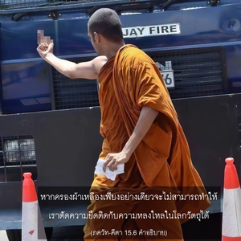

พระตำหนักสูงสุดของข้านั้นมิใช่สว่างไสวด้วยดวงอาทิตย์ ดวงจันทร์ ไฟ หรือไฟฟ้า ผู้ที่ไปถึงที่นั่นจะไม่กลับมายังโลกวัตถุนี้อีก

 ประกอบกันเป็นท้องฟ้าที่เจิดจรัสเรียกว่า บระฮมะจโยทิ อันที่จริงรัศมีได้สาดส่องออกมาจากดาวเคราะห์ของคริชณะคือ โกโลคะ วรินดาวะนะ ส่วนหนึ่งของรัศมีที่สาดส่องออกมานั้นถูก มะฮัท-ทัททวะ หรือโลกวัตถุปกคลุม")



โลกทิพย์ หรือพระตำหนักขององค์กฺฤษฺณ บุคลิกภาพสูงสุดแห่งพระเจ้า มีชื่อว่า กฺฤษฺณโลก โคโลก วฺฤนฺทาวน ได้อธิบายไว้ ณ ที่นี้ว่า ในท้องฟ้าทิพย์ไม่จำเป็นต้องมีแสงอาทิตย์ แสงจันทร์ แสงไฟ หรือไฟฟ้า เพราะว่าดาวเคราะห์ทั้งหมดมีแสงสว่างอยู่ในตัว ในจักรวาลนี้มีดาวเคราะห์เพียงดวงเดียวที่มีแสงอยู่ในตัว คือ ดวงอาทิตย์ แต่ดาวเคราะห์ในท้องฟ้าทิพย์ทั้งหมดนั้นมีแสงสว่างอยู่ในตัว รัศมีที่ส่องออกมาจากดาวเคราะห์ทั้งหมด (ไวกุณฺฐ) ประกอบกันเป็นท้องฟ้าที่เจิดจรัส เรียกว่า พฺรหฺม-โชฺยติรฺ อันที่จริงรัศมีได้สาดส่องออกมาจากดาวเคราะห์ขององค์กฺฤษฺณ คือ โคโลก วฺฤนฺทาวน ส่วนหนึ่งของรัศมีที่สาดส่องออกมานั้นถูก มหตฺ-ตตฺตฺว หรือโลกวัตถุปกคลุม นอกนั้นส่วนใหญ่ของท้องฟ้าที่สาดแสงจะเต็มไปด้วยดาวเคราะห์ทิพย์ เรียกว่า ไวกุณฺฐ ดวงที่สำคัญที่สุด คือ โคโลก วฺฤนฺทาวน
ตราบใดที่สิ่งมีชีวิตยังอยู่ในโลกวัตถุอันมืดมนนี้ เขาต้องติดอยู่ในชีวิตที่ถูกพันธนาการ แต่ทันทีที่ไปถึงท้องฟ้าทิพย์ด้วยการตัดต้นไม้ไม่จริงที่กลับตาลปัตรแห่งโลกวัตถุนี้ เขาจะเป็นอิสระ และไม่มีโอกาสกลับมาที่นี่อีก ในชีวิตที่ถูกพันธนาการสิ่งมีชิวิตพิจารณาว่าตนเองเป็นเจ้าของแห่งโลกวัตถุนี้ แต่ในระดับหลุดพ้นเขาเข้าไปในอาณาจักรทิพย์ และอยู่ใกล้ชิดกับองค์ภควานฺ ณ ที่นั้นเขารื่นเริงอยู่กับความปลื้มปีติสุขนิรันดร มีชีวิตเป็นอมตะ และเปี่ยมไปด้วยความรู้
เราควรยินดีกับข้อมูลนี้ และควรปรารถนาที่จะย้ายตนเองไปยังโลกอมตะนั้น เราควรแก้ไขตนเองให้หลุดพ้นจากภาพสะท้อนที่ผิดไปจากความจริงนี้ สำหรับผู้ที่ยึดติดมากอยู่กับโลกวัตถุการตัดจากความยึดติดนั้นเป็นสิ่งที่ยากมาก ถ้าหากว่าเราปฏิบัติกฺฤษฺณจิตสำนึกก็จะค่อยๆ ทำให้เรายึดติดน้อยลง เราต้องคบหาสมาคมกับสาวกผู้อยู่ในกฺฤษฺณจิตสำนึก และควรแสวงหาสมาคมที่อุทิศตนให้แก่กฺฤษฺณจิตสำนึก และเรียนรู้การปฏิบัติการอุทิศตนเสียสละรับใช้ เช่นนี้จะทำให้สามารถตัดความยึดติดกับโลกวัตถุนี้ได้ หากครองผ้าเหลืองเพียงอย่างเดียวจะไม่สามารถทำให้เราตัดความยึดติดกับความหลงใหลในโลกวัตถุได้ เราต้องยึดมั่นกับการอุทิศตนเสียสละรับใช้ต่อองค์ภควานฺ และควรปฏิบัติการอุทิศตนเสียสละรับใช้อย่างจริงจัง ดังที่ได้อธิบายไว้ในบทที่สิบสอง ซึ่งเป็นวิถีทางเดียวเท่านั้นที่จะทำให้เราออกไปจากตัวแทนจอมปลอมของต้นไม้จริงนี้ ในบทที่สิบสี่ได้อธิบายถึงวิธีการทั้งหลายของธรรมชาติวัตถุที่ทำให้มีมลทิน ได้กล่าวไว้ว่า การอุทิศตนเสียสละรับใช้เท่านั้นที่เป็นทิพย์อย่างบริสุทธิ์
คำว่า ปรมํ มม มีความสำคัญมากตรงนี้ อันที่จริงทุกซอกทุกมุมเป็นสมบัติขององค์ภควานฺ แต่โลกทิพย์เป็น ปรมมฺ ซึ่งเต็มไปด้วยความมั่งคั่งหกประการ กฐ อุปนิษทฺ (2.2.15) ยืนยันไว้เช่นกันว่า ในโลกทิพย์ไม่จำเป็นต้องมีแสงอาทิตย์ แสงจันทร์ หรือหมู่ดวงดาว (น ตตฺร สูโรฺย ภาติ น จนฺทฺร-ตารกมฺ) เนื่องจากพลังงานเบื้องสูงขององค์ภควานฺส่องแสงสว่างไสวไปทั่วท้องฟ้าทิพย์ทั้งหมด พระตำหนักสูงสุดจะบรรลุได้ด้วยการศิโรราบเท่านั้น ใช่ไม่ด้วยวิธีอื่นใดทั้งสิ้น